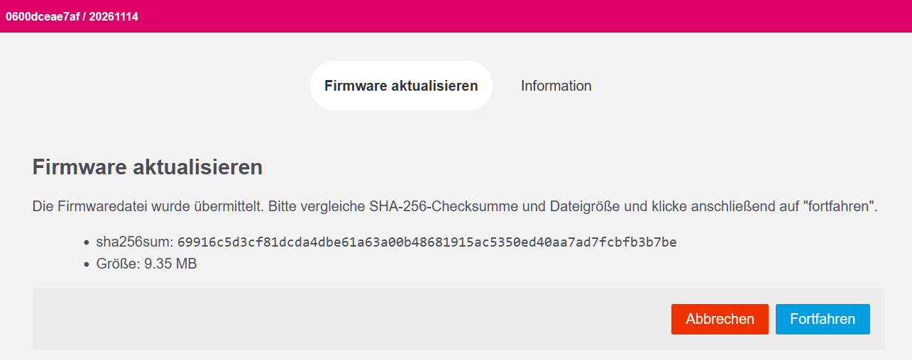

Aruba AP-365: Freifunk-Firmware installieren

Schreib uns, ob es geklappt hat. Und wenn es irgendwo hakt: Melde dich,
wir helfen dir weiter. Jede Rückmeldung macht die
Anleitung für alle nach dir besser:
projekt@neanderfunk.de
Aruba-Access-Points nehmen eine fremde Firmware nicht über ihre
Weboberfläche an. Der Weg führt über die serielle Konsole, also ein
Kabel, über das du den Bootloader des Geräts (bei Aruba heißt er "APBoot")
direkt bedienst. Das Gehäuse musst du dafür nicht öffnen.
Der Weg hat zwei Etappen:
- Die RAMpe starten. Du stellst den Bootloader so ein, dass er die
Gluon-RAMpe per TFTP von deinem Rechner holt und startet: eine kleine
Firmware, die nur eins kann, die Freifunk-Firmware deiner Community
annehmen. Sie läuft nur im Arbeitsspeicher.
- Die Freifunk-Firmware aufspielen. Auf der Seite der RAMpe lädst du
sie im Browser hoch. Den Speicher bereitet die RAMpe dabei selbst vor.
Dafür brauchst du zwei Werkzeuge, die auf eigenen Seiten erklärt sind:
Serielle Konsole benutzen und
TFTP-Server einrichten. Rechne beim ersten Mal
mit einer Stunde, ohne das Kabel zu bauen.
Was du brauchst
- den Access Point mit Stromversorgung (Netzteil oder PoE-Injektor), einen
Rechner mit Netzwerkanschluss und ein Netzwerkkabel
- ein USB-Kabel für die USB-Buchse des Geräts. Sie ist beim Aruba AP-365
ein echter USB-Anschluss mit eingebautem Seriell-Wandler (CP2101). Ein
Adapter ist also nicht nötig, unter Windows eventuell aber der
CP210x-Treiber des Herstellers Silicon Labs.
- ein Terminalprogramm und einen TFTP-Server (siehe die zwei Seiten oben)
- diese Dateien:
- die RAMpe für dein Gerät:
gluon-rampe-20261115-aruba-ap-365-initramfs-uImage.itb.
Leg sie in den Ordner deines TFTP-Servers und benenn sie dort genau in
ipq40xx.ari um.
- die Freifunk-Firmware deiner Community für den Aruba AP-365, und zwar
das sysupgrade-Image.
Vorher prüfen
- Der Instant On AP17 ist technisch ein AP-365
und nutzt dieselbe Freifunk-Firmware.
Schritte
Vorbereitung
-
Feste Adresse am Rechner. Stell deinen Rechner auf
192.168.1.75, Netzmaske 255.255.255.0
(Feste IP-Adresse einstellen). Unter dieser
Adresse sucht der Access Point den TFTP-Server.
-
TFTP-Server starten. Starte den TFTP-Server mit dem Ordner, in dem
ipq40xx.ari liegt
(TFTP-Server einrichten).
-
Kabel anschließen. Netzwerkkabel vom Rechner an die Netzwerkbuchse des Access Points.
Das Konsolenkabel an die Konsolenbuchse, das andere Ende an den Rechner.
Strom noch nicht anschließen.
-
Terminal öffnen. Starte das Terminalprogramm mit 9600 Baud, 8N1,
ohne Flusssteuerung
(Serielle Konsole benutzen).
-
Bootloader anhalten. Schließ jetzt den Strom an. Im Terminal erscheint
der Start des Bootloaders. Die erste Zeile beginnt mit APBoot und
nennt die Version, merk sie dir. Sobald Hit <Enter> to stop autoboot
erscheint, drück Enter. Das Zeitfenster ist nur etwa zwei Sekunden lang;
drück am besten schon beim Einschalten immer wieder Enter. Prüfen: Es
erscheint die Eingabeaufforderung apboot>. Sonst Strom ziehen und noch
einmal.
Die RAMpe starten
-
Bootloader einstellen. Gib diese Befehle ein, jede Zeile einzeln, und
warte nach jeder Zeile auf apboot>:
setenv bootargs_openwrt "setenv bootargs console=ttyMSM1,9600n8"
setenv nandboot_openwrt "run bootargs_openwrt; ubi part aos1; ubi read 0x85000000 kernel; set fdt_high 0x87000000; bootm 0x85000000"
setenv ramboot_openwrt "run bootargs_openwrt; setenv ipaddr 192.168.1.105; setenv serverip 192.168.1.75; netget; set fdt_high 0x87000000; bootm"
setenv bootcmd "run nandboot_openwrt"
saveenv
Prüfen: Gib printenv ramboot_openwrt ein. Die Ausgabe muss genau
der dritten Zeile oben entsprechen. Sonst diese Zeile noch einmal
eingeben und wieder saveenv.
Damit startet der Access Point ab jetzt nicht mehr die
Aruba-Firmware. Die Aruba-Firmware bleibt im Speicher, siehe "Zurück zur
Aruba-Firmware".
-
Die RAMpe laden. Gib ein:
run ramboot_openwrt
Der Access Point holt ipq40xx.ari von deinem Rechner. Danach erscheint
Invalid image format version, das ist normal. Kurz darauf startet
die RAMpe, das Terminal zeigt viele Zeilen. Warte, bis
Please press Enter to activate this console. erscheint.
Kommt stattdessen Unknown command 'bootm', lies unter "Wenn etwas
schiefgeht" weiter.
Freifunk-Firmware aufspielen
-
Rechner vorbereiten. Die feste Adresse
192.168.1.75 passt auch für die RAMpe unter 192.168.1.1.
-
Die RAMpe-Seite öffnen. Öffne http://192.168.1.1. Die RAMpe
leitet von selbst auf ihre Seite "Firmware aktualisieren" weiter. Kommt
stattdessen "Not Found", hat sich der Browser eine Weiterleitung von
früher gemerkt, siehe Der Browser zeigt "Not Found".
Kommt gar nichts, siehe Die Router-Seite antwortet nicht.
Zeigt der Browser eine Warnung vor einem unsicheren Zertifikat, hat er
von sich aus https:// vor die Adresse gesetzt, siehe
Browser macht https daraus.
Die RAMpe läuft nur im Arbeitsspeicher. Startet das Gerät zwischendurch
neu oder fehlt der Strom, ist sie weg: dann noch einmal ab Schritt 5.

-
Freifunk-Firmware hochladen. Wähl das sysupgrade-Image
deiner Community aus und klick "Datei hochladen". Die RAMpe zeigt die
Prüfsumme (SHA256) der Datei. Vergleich sie mit der Prüfsumme, die deine
Community zur Datei angibt. Stimmt sie, klick "Fortfahren".

Danach erscheint der Hinweis, dass die Firmware jetzt geschrieben wird.
Jetzt den Strom nicht unterbrechen.

Vor dem Schreiben bereitet die RAMpe den Speicher vor. Klappt das nicht,
schreibt sie nichts und zeigt ein Protokoll an, siehe "Wenn etwas
schiefgeht".
-
Fertig. Einige Minuten warten, Strom nicht ziehen. Im
Konsolen-Terminal siehst du den Neustart. Stell den Rechner wieder auf
"automatisch". Danach startet die Freifunk-Firmware deiner Community: je
nach Community zuerst mit einer Einrichtungsseite unter
http://192.168.1.1 oder gleich im Betrieb.
Antwortet dort nichts, siehe Die Router-Seite antwortet
nicht; kommt "Not Found", siehe
Der Browser zeigt "Not Found".
Woran du erkennst, dass es geklappt hat
- In Schritt 5 erscheint
apboot>.
- In Schritt 7 zeigt der Bootloader, dass er die Datei geholt hat
(
Bytes transferred = …), und die RAMpe startet.
- In Schritt 9 zeigt
http://192.168.1.1 die RAMpe-Seite
"Firmware aktualisieren".
- Nach Schritt 11 meldet sich die Freifunk-Firmware.
Wenn etwas schiefgeht
- Im Terminal erscheint nichts. Prüf Baudrate (9600), GND und die
Leitungen. TX und RX tauschen
(Serielle Konsole benutzen).
- Text erscheint, aber Enter wirkt nicht. Der Konsolenanschluss der
Aruba-Geräte ist wählerisch. Mit manchen Adaptern kann man mitlesen, aber
nichts eingeben. Versuch einen anderen Adapter.
- Eine Datei kommt nicht an (der Bootloader wiederholt es oder bricht
ab). Prüf die feste Adresse
192.168.1.75, die Firewall deines Rechners
und den Dateinamen.
- In Schritt 7 kommt
Unknown command 'bootm'. Dann hat dein Gerät vermutlich einen neueren Bootloader, aus
dem der Hersteller Befehle entfernt hat, die OpenWrt braucht. Einen
passenden älteren Bootloader für den Aruba AP-365 haben wir noch nicht.
Bitte schreib uns, damit wir es klären können. Schreib auf keinen Fall
den Bootloader eines anderen Modells auf dein Gerät, auch nicht den von
der Seite eines ähnlichen Geräts: Es könnte danach nicht mehr starten.
Willst du an dieser Stelle aufhören, stell im Bootloader den Start der
Aruba-Firmware wieder her, wie unter "Zurück zur Aruba-Firmware"
beschrieben.
- In Schritt 9 antwortet nichts. Warte noch eine Minute,
die RAMpe braucht etwas.
- Die RAMpe meldet beim Vorbereiten des Speichers einen Fehler und
zeigt ein Protokoll. Dann hat sie nichts geschrieben. Nicht weitermachen,
sondern das Protokoll abschreiben (oder die Mitschrift des Terminals
nehmen) und uns schreiben.
Anderer Weg: über OpenWrt
Statt der RAMpe startet der Bootloader in Schritt 7 auch OpenWrt:
openwrt-24.10.8-ipq40xx-generic-aruba_ap-365-initramfs-uImage.itb, SHA256 9dbf7ed4b826d75d4d6893c52d3d5e925b2331c91a33b9842a3d1f7c03a12d83,
ebenfalls als ipq40xx.ari in den TFTP-Ordner. Den Speicher bereitest du
dann selbst vor (SSH und scp benutzen): das
sysupgrade-Image in gluon.bin umbenennen, Rechner wie in Schritt
8 vorbereiten, dann
scp -O gluon.bin root@192.168.1.1:/tmp/gluon.bin
ssh root@192.168.1.1
und auf dem Access Point, Zeile für Zeile (prüf vorher mit
grep ubi /proc/mtd, dass die Ausgabe mit
mtd1: beginnt und auf "ubi" endet):
ubidetach -p /dev/mtd1
ubiformat /dev/mtd1
sysupgrade -n /tmp/gluon.bin
Zurück zur Aruba-Firmware
Die Aruba-Firmware bleibt bei diesem Weg im Speicher. Um sie wieder zu
starten, halt den Bootloader an (Schritt 5) und gib ein:
setenv bootcmd "boot"
saveenv
Freifunk-Installationsanleitung, erzeugt aus gluon-rampe-installer.